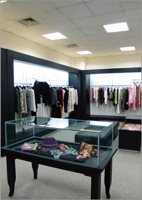

具象与幻影般若隐若现的抽象印花图案、隐条纹与花卉图案、漂浮动感的图案拔染印花在针织上加以应用锯齿状的纹理图案，在经过柔软处理的平面面料上进行变化重组。三维针织面料，柔软、滑腻、起皱的雪纺面料。
时尚达人倡导之品牌"高菲丽"由韩国面料纤维研究中心配合韩国顶尖国际时装设计师团队共同协作完成；其100%的服装面料、辅料均进口于韩国。注重产品细节，有针对性地面向某些消费群体。高菲丽冲破单纯追求“流行”的架构，推崇“后现代时尚”主题。纯韩版风格的独特诠释，淘汰虚假雍容和做作的高贵，崇尚自然轻松和人性、对文化有归属感。
熟练巧妙地应用流行色并让每个年龄段所喜爱的色彩都出现在流行色谱中。主流色彩和旁系色彩的混合，自然色系粉色调从空虚单调的灰色变化成强调装饰的浓重色彩，柔和宁静的色彩中注入了异国情调的热情。但在材质与做工上仍保持着韩国服装传统的精致与考究领部的标新立异的独特设计。
以独立、自由、优雅感性的都市白领女性为核心，推崇迷人、特立、完美的形象，她秉承了韩国时装注重展示女性自然美和曲线美的设计理念，推崇现代女性个性时尚风格的追求。展现新时代女性对风尚的全新诠释,表达出她们对生活的态度 。